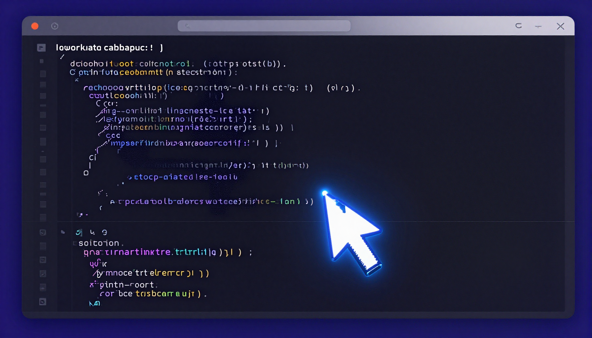

Cursor AI Review (2026): The Best AI Code Editor?

Cursor has taken the developer world by storm. Built as a fork of VS Code with deeply integrated AI capabilities, it promises to transform how developers write code. After using it as our primary editor for two weeks, here's what we found.
What Is Cursor?
Cursor is an AI-first code editor based on VS Code. It integrates AI directly into the coding workflow with features like intelligent autocomplete (Tab completion), inline editing, multi-file code generation, and natural language codebase queries. It supports multiple AI models including Claude and GPT-4o.
Key Features
- Tab Completion: AI-powered autocomplete that understands your entire codebase
- Cmd+K Inline Editing: Highlight code and modify it with natural language
- Composer: Generate multi-file changes from a single prompt
- Chat with Codebase: Ask questions about your entire project using natural language
- Apply: AI-generated code diffs that you can review and apply
- Multi-Model Support: Switch between Claude, GPT-4o, and other models
- VS Code Compatible: All your extensions and settings work
Performance
Autocomplete: Cursor's tab completion is eerily good. It doesn't just complete the current line — it often predicts the next 5-10 lines of code correctly. This alone saves significant time. Score: 9/10
Code Generation: The Composer feature generates multi-file changes that are surprisingly accurate. For building features, creating components, or setting up boilerplate, it's a game-changer. Score: 9/10
Code Understanding: Asking questions about your codebase works well for most projects. It's particularly useful for understanding unfamiliar code or large repositories. Score: 8/10
✅ Pros
- Deeply integrated AI feels natural, not bolted on
- Excellent code completion and generation
- VS Code compatibility (all extensions work)
- Multi-model support (Claude, GPT-4o)
- Composer for multi-file edits is revolutionary
- Generous free tier for individual use
❌ Cons
- Uses AI credits quickly on complex tasks
- Requires fast internet for best experience
- Business plan ($40/user/mo) is expensive
- AI sometimes suggests unnecessary changes
Pricing
| Plan | Price | Features |
|---|---|---|
| Free | $0 | 2000 completions, 50 premium requests/mo |
| Pro | $20/mo | Unlimited completions, 500 premium requests/mo |
| Business | $40/user/mo | Everything in Pro + admin, central billing, privacy mode |
Final Verdict
Cursor is the most impressive AI code editor we've tested. For developers who spend most of their time in VS Code, switching to Cursor is a no-brainer — it's the same editor you love, but with AI that actually understands your code. 4.6 out of 5 stars.
Cursor represents the future of coding. If you're a developer, try it for a week — you won't go back.